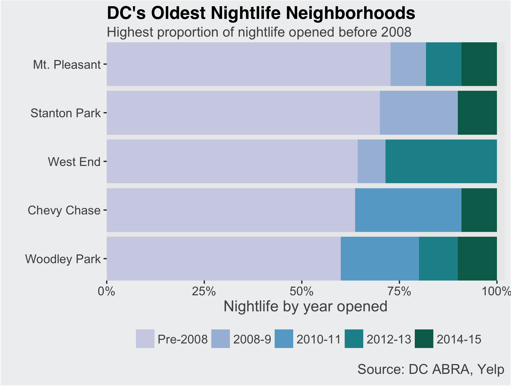
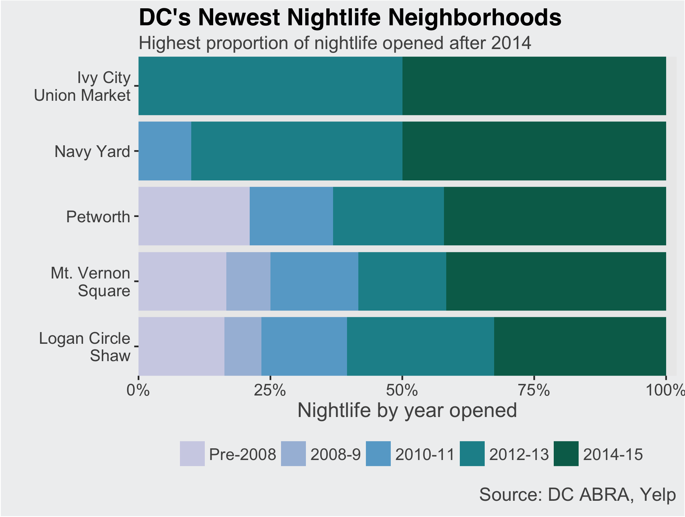

In recent years DC has seen a large influx of new restaurants and bars. But these new businesses aren’t necessarily opening in the same neighborhoods as they would have five or ten years ago. And for many, where they go out on Saturday night has been slowly moving east. The map below shows the percent of today's nightlife establishments (bars, nightclubs, and restaurants with liquor licenses) that opened after 2010, for neighborhoods with more than 10 nightlife establishments.
DC's Newest Nightlife Moving East
Percent of nightlife opened after 2010
Only neighborhoods with 10 or more nightlife establishments shown. Data as of December 2015
Source: District of Columbia Open Data; Yelp
Looking at a more detailed timeline shows striking divides. In neighborhoods with the oldest nightlife, more than 60% opened prior to 2007. Conversely, in the Ivy City/Union Market neighborhood none of today's nightlife was open prior to 2012; in Navy Yard only one-fifth was. All the oldest nightlife neighborhoods, with the exception of Stanton Park, are north of downtown and west of 16th St NW. The newest are more geographically diverse, located in three of the city's four quadrants.


Of course, today's newest nightlife neighborhoods did not arise out of nothing, but have changed over time. While none of today's Navy Yard nightlife was open prior to 2010, the neighborhood has historically been home to bars and clubs serving predominantly African American or LGBTQ communities.
Technical notes: Data are as of December 2015 and sourced from ABRA ABC Licensees, Certificate of Occupancy, and Yelp. You can find complete code for this post on my github page.